seaborn#
import seaborn as sns
import numpy as np
import matplotlib.pyplot as plt
---------------------------------------------------------------------------
ModuleNotFoundError Traceback (most recent call last)
Cell In[1], line 1
----> 1 import seaborn as sns
2 import numpy as np
3 import matplotlib.pyplot as plt
ModuleNotFoundError: No module named 'seaborn'
4.16 用Seaborn做数据可视化#
seaborn 接口返回值：
ax: 表示单图，
Grid: 表示多图。
Figure：特例。聚类图不常见。 https://seaborn.pydata.org/tutorial.html
import seaborn as sns
ax = sns.scatterplot(x=[1, 2, 3], y=[4, 5, 6]) # 返回 Axes
print(ax) # <AxesSubplot: ...>
Axes(0.125,0.11;0.775x0.77)
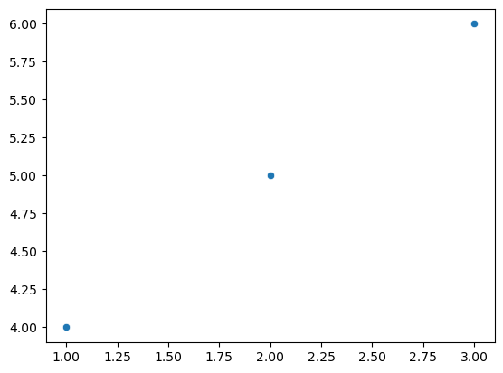
import numpy as np
import pandas as pd
zz = np.random.randn(3,3)
df = pd.DataFrame(zz)
sns.pairplot(df)
<seaborn.axisgrid.PairGrid at 0x21e4c143f50>
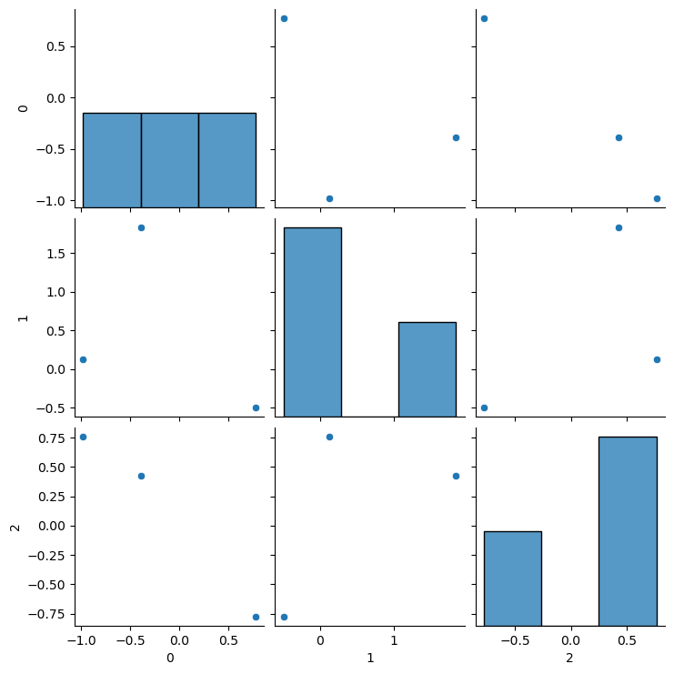
4.16.1 Seaborn与Matplotlib#
如果是ax-level接口,返回ax对象; 如histplot、scatterplt
figure-level接口，返回网格对象，通过.figure, .axes获取; 如pairplot
import matplotlib.pyplot as plt
plt.style.use('classic')
%matplotlib inline
import numpy as np
import pandas as pd
# 创建一些数据
rng = np.random.RandomState(0)
x = np.linspace(0, 10, 500)
y = np.cumsum(rng.randn(500, 6), 0) # 累积求和。 生成500*6矩阵，然后列聚合， 500*1
# 用Matplotlib默认样式画图
plt.plot(x, y)
plt.legend('ABCDEF', ncol=2, loc='upper left');
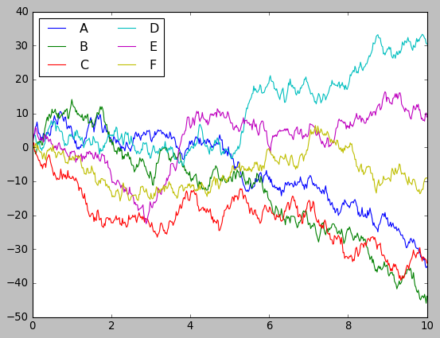
import seaborn as sns
sns.set()
# 同样的代码，seaborn绘图
plt.plot(x, y)
plt.legend('ABCDEF', ncol=2, loc='upper left');
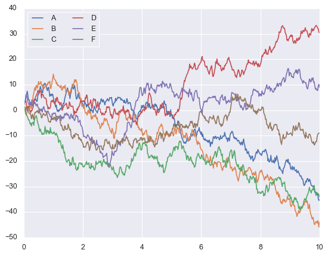
更好看了seaborn
4.16.2 Seaborn图形介绍#
默认很多时候出发legend
1. 频次直方图、KDE和密度图：数据分布#
data = np.random.multivariate_normal([0, 0], [[5, 2], [2, 2]], size=2000) # 生成2000个二维正太分布点
data = pd.DataFrame(data, columns=['x', 'y'])
for col in 'xy': # 遍历xy列， 绘制x和y两个方向的hist
plt.hist(data[col], density=True, alpha=0.5) # density=True 直方图面积和1
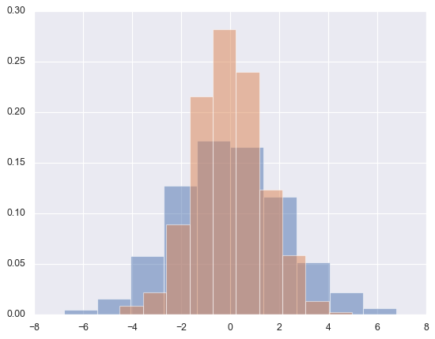
for col in 'xy':
sns.kdeplot(data[col], fill=True) # KDE平滑图
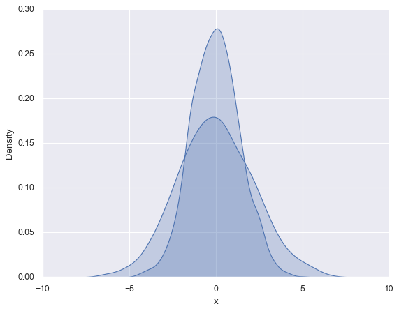
sns.histplot (data['x'], kde=True) # 平滑图和直方图
sns.histplot (data['y'], kde=True);
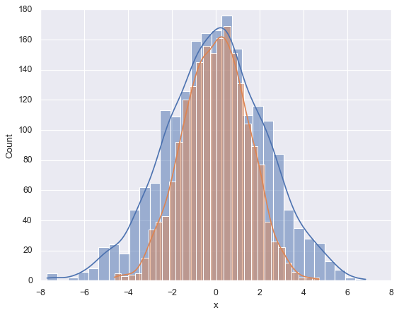
二维图
sns.kdeplot(data=data, x='x', y='y', fill=True)
<Axes: xlabel='x', ylabel='y'>
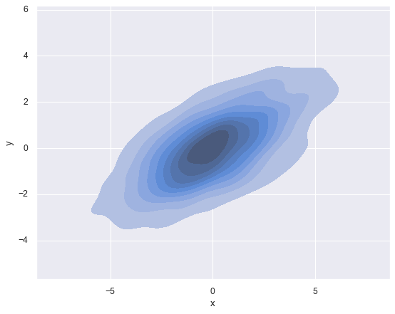
# 使用 jointplot 绘制二维数据的关系， 会带有变量的分布
sns.jointplot(data=data, x='x', y='y', kind='kde', fill=True)
<seaborn.axisgrid.JointGrid at 0x200443227b0>
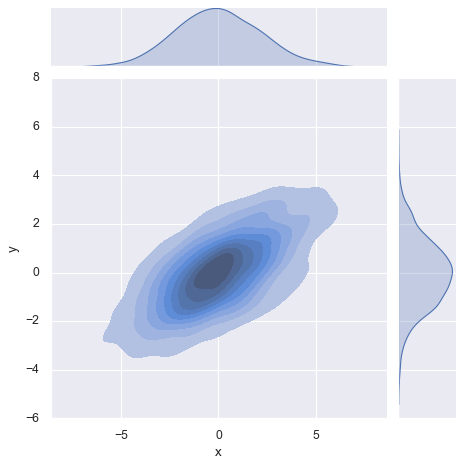
2. 矩阵图： 多组2变量关系#
对多维数据可视化，常常需要所有两个变量的关系，探索不同维度之间的相关性。
iris = sns.load_dataset("iris")
iris.head()
| sepal_length | sepal_width | petal_length | petal_width | species | |
|---|---|---|---|---|---|
| 0 | 5.1 | 3.5 | 1.4 | 0.2 | setosa |
| 1 | 4.9 | 3.0 | 1.4 | 0.2 | setosa |
| 2 | 4.7 | 3.2 | 1.3 | 0.2 | setosa |
| 3 | 4.6 | 3.1 | 1.5 | 0.2 | setosa |
| 4 | 5.0 | 3.6 | 1.4 | 0.2 | setosa |
sns.pairplot
kind: 图类型。 scatter默认。 ‘kde’平滑曲线
diag_kind=’kde’:对角线上的图用KDE代替直方图hist
hue : 按类别着色， 值为一个列名
palette: 调色方案. 如’deep’
height: 每个子图大小
aspect: 长宽比
sns.pairplot(iris, hue='species', height=2.5); # 直接一句代码即可
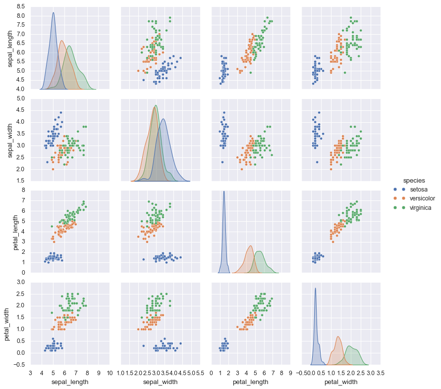
3. 分面频次直方图：按类别的直方图。 按类别分布#
tips = sns.load_dataset('tips')
tips.head()
| total_bill | tip | sex | smoker | day | time | size | |
|---|---|---|---|---|---|---|---|
| 0 | 16.99 | 1.01 | Female | No | Sun | Dinner | 2 |
| 1 | 10.34 | 1.66 | Male | No | Sun | Dinner | 3 |
| 2 | 21.01 | 3.50 | Male | No | Sun | Dinner | 3 |
| 3 | 23.68 | 3.31 | Male | No | Sun | Dinner | 2 |
| 4 | 24.59 | 3.61 | Female | No | Sun | Dinner | 4 |
tips['tip_pct'] = 100 * tips['tip'] / tips['total_bill'] # 小费占总账单的百分比。
grid = sns.FacetGrid(tips, row="sex", col="time", margin_titles=True) # 用于根据指定的分类变量来拆分数据，并生成一个 面板（facet） 图。
grid.map(plt.hist, "tip_pct", bins=np.linspace(0, 40, 15));
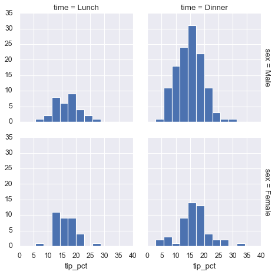
4. 箱线图： 分位点#
箱体：Q1-Q3分位点. 四分位距
IQR = Q3 - Q1箱体里面横线：median
须：非异常范围。端点默认为
Q1 - 1.5 × IQR和Q3 + 1.5 × IQR单独点：异常值
catplot : categorical
with sns.axes_style(style='ticks'):
g = sns.catplot(x="day", y="total_bill", hue="sex", data=tips, kind="box")
g.set_axis_labels("Day", "Total Bill")
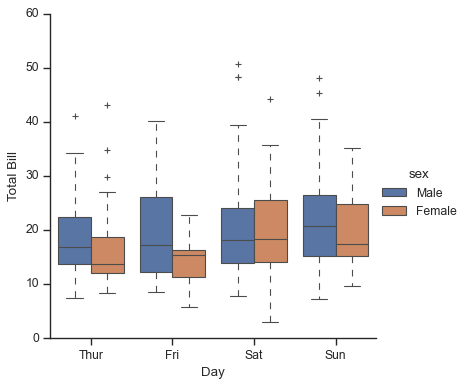
5. 联合分布#
# 使用 jointplot 创建 hexbin 图
with sns.axes_style('white'):
sns.jointplot(x="total_bill", y="tip", data=tips, kind='hex')
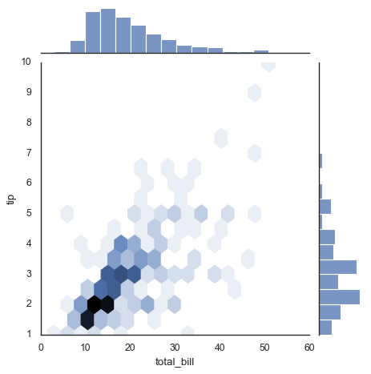
sns.jointplot(x="total_bill", y="tip", data=tips, kind='reg'); # 带回归拟合
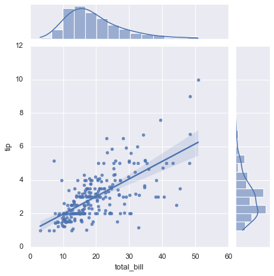
6. 条形图: 每个分类统计#
planets = sns.load_dataset('planets')
planets.head()
| method | number | orbital_period | mass | distance | year | |
|---|---|---|---|---|---|---|
| 0 | Radial Velocity | 1 | 269.300 | 7.10 | 77.40 | 2006 |
| 1 | Radial Velocity | 1 | 874.774 | 2.21 | 56.95 | 2008 |
| 2 | Radial Velocity | 1 | 763.000 | 2.60 | 19.84 | 2011 |
| 3 | Radial Velocity | 1 | 326.030 | 19.40 | 110.62 | 2007 |
| 4 | Radial Velocity | 1 | 516.220 | 10.50 | 119.47 | 2009 |
# 使用 catplot 创建计数图
with sns.axes_style('white'):
g = sns.catplot(x="year", data=planets, aspect=2, #aspect控制宽度
kind="count", color='steelblue')
# 设置 x 轴标签的步长
g.set_xticklabels(rotation=45, ha="right")
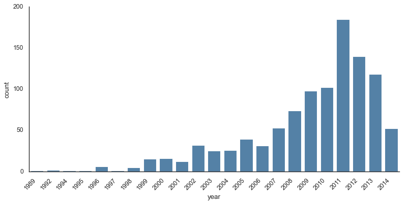
# 使用 catplot 创建计数图，根据method字段着色
with sns.axes_style('white'):
g = sns.catplot(x="year", data=planets, aspect=4.0, kind='count',
hue='method', order=range(2001, 2015)) # 指定年份
# 设置 y 轴标签
g.set_ylabels('Number of Planets Discovered')
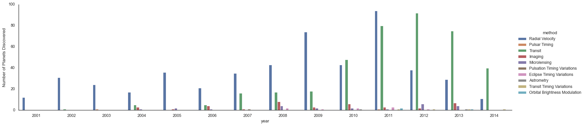
7. 热图#
# 生成 5x5 矩阵
mat = np.random.rand(5, 5)
# 绘制热图
sns.heatmap(mat,
square=True,
annot=True,
cbar=False,
cmap="coolwarm",
yticklabels = False
) # 正方形，显示数字，不显示colorbar
---------------------------------------------------------------------------
NameError Traceback (most recent call last)
Cell In[1], line 2
1 # 生成 5x5 矩阵
----> 2 mat = np.random.rand(5, 5)
4 # 绘制热图
5 sns.heatmap(mat,
6 square=True,
7 annot=True,
(...)
10 yticklabels = False
11 ) # 正方形，显示数字，不显示colorbar
NameError: name 'np' is not defined
7. 等高线#
import seaborn as sns
import numpy as np
import matplotlib.pyplot as plt
# 生成数据
x = np.random.normal(size=1000)
y = np.random.normal(size=1000)
# 使用 seaborn 绘制等高线
sns.kdeplot(x=x, y=y, cmap='Blues', fill=True, thresh=0.05)
plt.title('Seaborn Contour Plot')
plt.show()
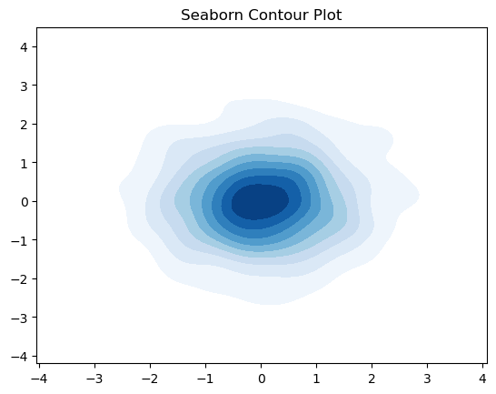
8. 折线图#
import seaborn as sns
import matplotlib.pyplot as plt
# 示例数据
data = {
'x': [1, 2, 3, 4, 5],
'y': [5, 7, 6, 8, 7]
}
# 画折线图
sns.lineplot(x=data['x'], y=data['y'])
plt.title('简单折线图')
plt.xlabel('X轴')
plt.ylabel('Y轴')
plt.show()
d:\miniconda3\Lib\site-packages\IPython\core\pylabtools.py:152: UserWarning: Glyph 36724 (\N{CJK UNIFIED IDEOGRAPH-8F74}) missing from font(s) DejaVu Sans.
fig.canvas.print_figure(bytes_io, **kw)
d:\miniconda3\Lib\site-packages\IPython\core\pylabtools.py:152: UserWarning: Glyph 31616 (\N{CJK UNIFIED IDEOGRAPH-7B80}) missing from font(s) DejaVu Sans.
fig.canvas.print_figure(bytes_io, **kw)
d:\miniconda3\Lib\site-packages\IPython\core\pylabtools.py:152: UserWarning: Glyph 21333 (\N{CJK UNIFIED IDEOGRAPH-5355}) missing from font(s) DejaVu Sans.
fig.canvas.print_figure(bytes_io, **kw)
d:\miniconda3\Lib\site-packages\IPython\core\pylabtools.py:152: UserWarning: Glyph 25240 (\N{CJK UNIFIED IDEOGRAPH-6298}) missing from font(s) DejaVu Sans.
fig.canvas.print_figure(bytes_io, **kw)
d:\miniconda3\Lib\site-packages\IPython\core\pylabtools.py:152: UserWarning: Glyph 32447 (\N{CJK UNIFIED IDEOGRAPH-7EBF}) missing from font(s) DejaVu Sans.
fig.canvas.print_figure(bytes_io, **kw)
d:\miniconda3\Lib\site-packages\IPython\core\pylabtools.py:152: UserWarning: Glyph 22270 (\N{CJK UNIFIED IDEOGRAPH-56FE}) missing from font(s) DejaVu Sans.
fig.canvas.print_figure(bytes_io, **kw)
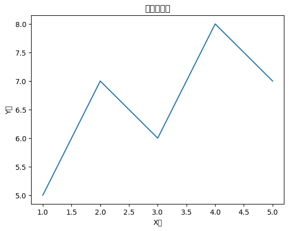
KdePlot 核密度估计#
Kernel Density Estimate
平滑了样本直方图
支持单变量，双变量
单变量就是线， 山丘
双变量就是等高线， 圈越小越密集，概率越大
geyser = sns.load_dataset("geyser")
sns.kdeplot(data=geyser, x="waiting", y="duration")
<Axes: xlabel='waiting', ylabel='duration'>
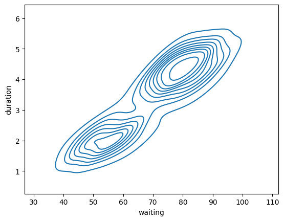
sns.kdeplot(
data=geyser, x="waiting", y="duration", hue="kind", fill=True,
)
<Axes: xlabel='waiting', ylabel='duration'>
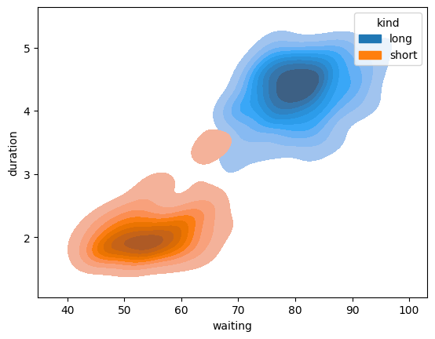
注意的是如果 标签hue数量差别大，那么会导致数量少的特征不明显。
这往往不符合我们的本意
tips = sns.load_dataset('tips')
tips
| total_bill | tip | sex | smoker | day | time | size | |
|---|---|---|---|---|---|---|---|
| 0 | 16.99 | 1.01 | Female | No | Sun | Dinner | 2 |
| 1 | 10.34 | 1.66 | Male | No | Sun | Dinner | 3 |
| 2 | 21.01 | 3.50 | Male | No | Sun | Dinner | 3 |
| 3 | 23.68 | 3.31 | Male | No | Sun | Dinner | 2 |
| 4 | 24.59 | 3.61 | Female | No | Sun | Dinner | 4 |
| ... | ... | ... | ... | ... | ... | ... | ... |
| 239 | 29.03 | 5.92 | Male | No | Sat | Dinner | 3 |
| 240 | 27.18 | 2.00 | Female | Yes | Sat | Dinner | 2 |
| 241 | 22.67 | 2.00 | Male | Yes | Sat | Dinner | 2 |
| 242 | 17.82 | 1.75 | Male | No | Sat | Dinner | 2 |
| 243 | 18.78 | 3.00 | Female | No | Thur | Dinner | 2 |
244 rows × 7 columns
sns.kdeplot(
data = tips,
x = 'total_bill',
hue = 'time'
)
<Axes: xlabel='total_bill', ylabel='Density'>
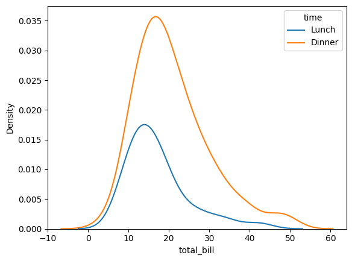
sns.kdeplot(
data = tips,
x = 'total_bill',
hue = 'time',
common_norm = False
)
<Axes: xlabel='total_bill', ylabel='Density'>
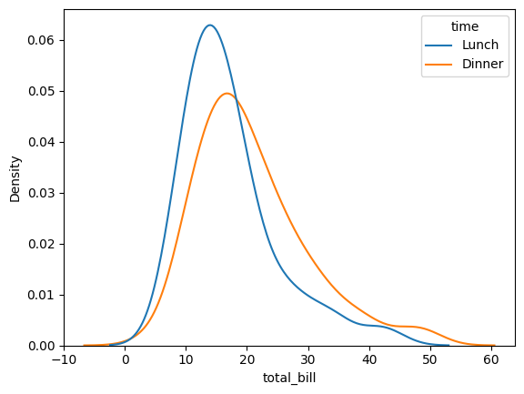
barplot#
Pairgrid 成对关系网格#
搭建了网格框架，需要调用map自行塞入
map传递的是双变量函数。
func(x,y)
penguins = sns.load_dataset('penguins')
g = sns.PairGrid(penguins)
g.map(sns.scatterplot)
<seaborn.axisgrid.PairGrid at 0x1cf49d42e40>
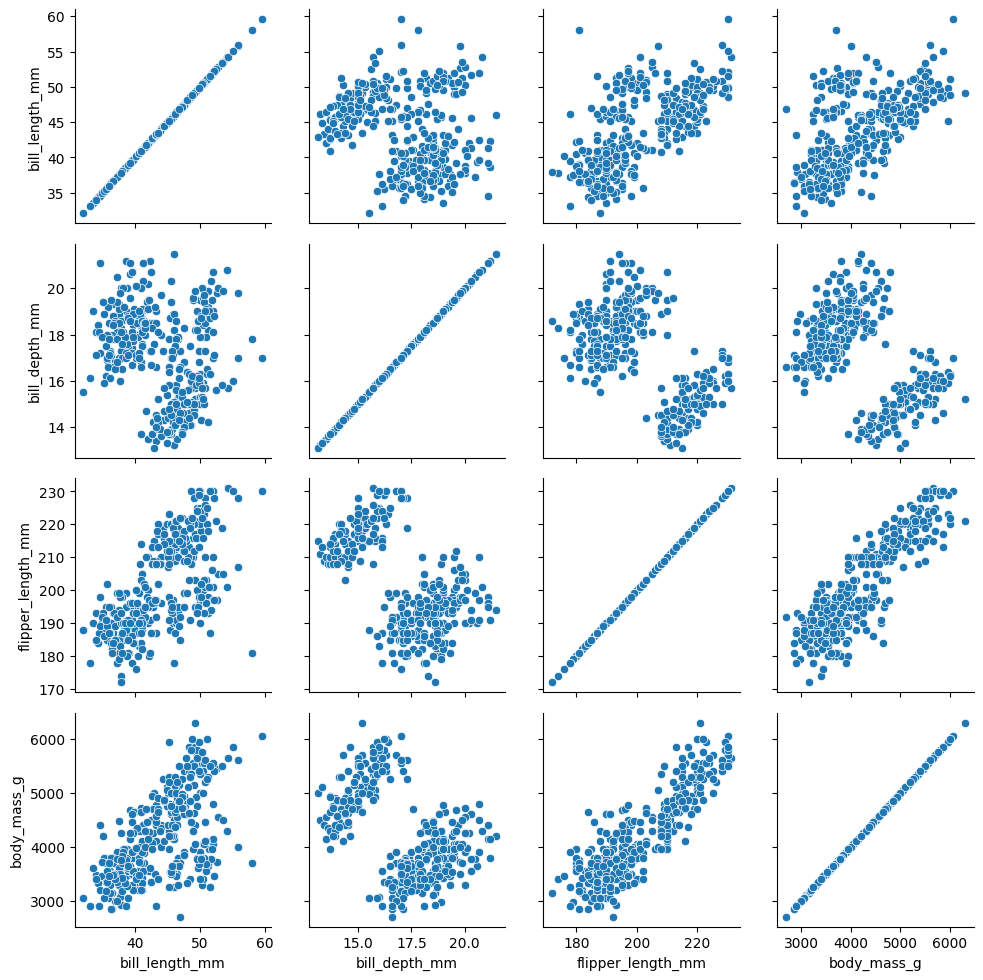
g = sns.PairGrid(penguins)
g.map_diag(sns.histplot) # 对角线
g.map_offdiag(sns.scatterplot) # 非对角线
<seaborn.axisgrid.PairGrid at 0x1cf8b839590>
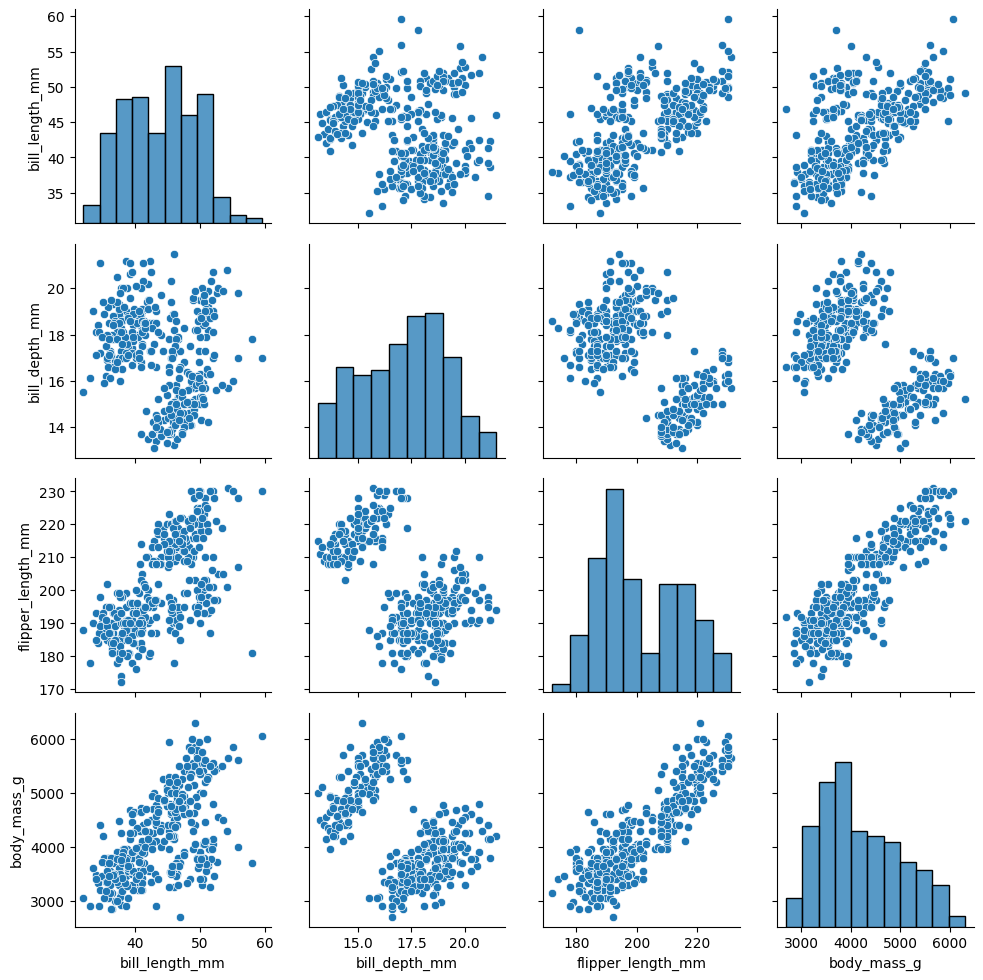
g = sns.PairGrid(penguins, diag_sharey=False)
g.map_upper(sns.scatterplot) # 散点
g.map_lower(sns.kdeplot) # 分布
g.map_diag(sns.kdeplot) # 分布
<seaborn.axisgrid.PairGrid at 0x1cf8c75de50>
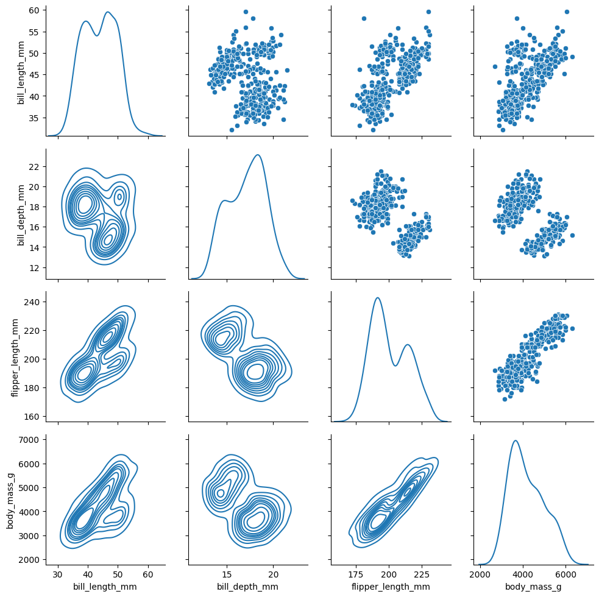
自定义函数
func(x,y, **kwargs)
import numpy as np
import matplotlib.pyplot as plt
def plot_crr(x, y, **kwargs):
r = np.corrcoef(x, y)[0][1]
ax = plt.gca() # 获取当前坐标轴
ax.annotate(f"r = {r:.2f}", xy=(0.5, 0.5), xycoords=ax.transAxes,
ha='center', fontsize=12, fontweight='bold')
penguins = penguins.dropna()
g = sns.PairGrid(penguins, diag_sharey=False)
g.map_upper(sns.scatterplot) # 散点
g.map_lower(plot_crr) # 相关系数
g.map_diag(sns.kdeplot) # 分布
<seaborn.axisgrid.PairGrid at 0x1cf8b2f32f0>
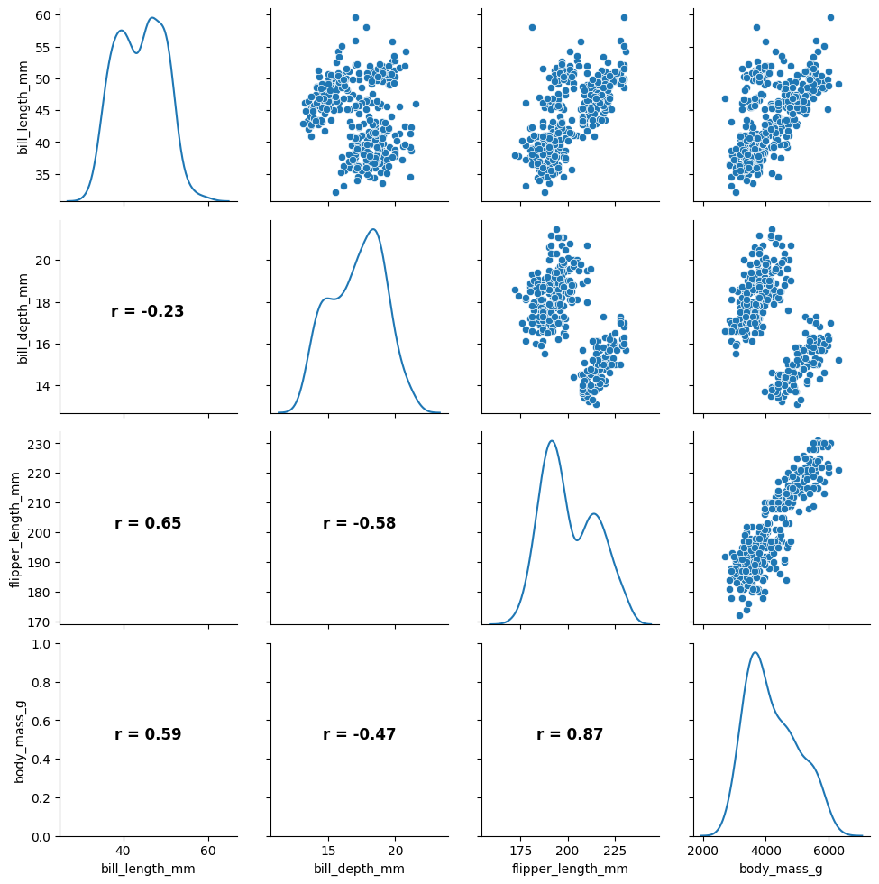
## 案例：探索马拉松比赛成绩数据
data = pd.read_csv('marathon-data.csv')
data.head()
| age | gender | split | final | |
|---|---|---|---|---|
| 0 | 33 | M | 01:05:38 | 02:08:51 |
| 1 | 32 | M | 01:06:26 | 02:09:28 |
| 2 | 31 | M | 01:06:49 | 02:10:42 |
| 3 | 38 | M | 01:06:16 | 02:13:45 |
| 4 | 31 | M | 01:06:32 | 02:13:59 |
data.dtypes
age int64
gender object
split object
final object
dtype: object
默认情况下， 时间都会转为字符串对象，我们需要转换位时间类型
def convert_time(s):
# 分割并转换时、分、秒为整数
h, m, s = map(int, s.split(':'))
# 将时分秒转换为timedelta格式
return pd.to_timedelta(f"{h}h {m}m {s}s")
data = pd.read_csv('marathon-data.csv', converters={'split':convert_time, 'final':convert_time}) # 导入时，就传入转换函数
data.head()
| age | gender | split | final | |
|---|---|---|---|---|
| 0 | 33 | M | 0 days 01:05:38 | 0 days 02:08:51 |
| 1 | 32 | M | 0 days 01:06:26 | 0 days 02:09:28 |
| 2 | 31 | M | 0 days 01:06:49 | 0 days 02:10:42 |
| 3 | 38 | M | 0 days 01:06:16 | 0 days 02:13:45 |
| 4 | 31 | M | 0 days 01:06:32 | 0 days 02:13:59 |
data.dtypes
age int64
gender object
split timedelta64[ns]
final timedelta64[ns]
dtype: object
data['split_sec'] = data['split'].astype(int) / 1E9
data['final_sec'] = data['final'].astype(int) / 1E9
data.head()
| age | gender | split | final | split_sec | final_sec | |
|---|---|---|---|---|---|---|
| 0 | 33 | M | 0 days 01:05:38 | 0 days 02:08:51 | 3938.0 | 7731.0 |
| 1 | 32 | M | 0 days 01:06:26 | 0 days 02:09:28 | 3986.0 | 7768.0 |
| 2 | 31 | M | 0 days 01:06:49 | 0 days 02:10:42 | 4009.0 | 7842.0 |
| 3 | 38 | M | 0 days 01:06:16 | 0 days 02:13:45 | 3976.0 | 8025.0 |
| 4 | 31 | M | 0 days 01:06:32 | 0 days 02:13:59 | 3992.0 | 8039.0 |
with sns.axes_style('white'):
g = sns.jointplot(x="split_sec", y="final_sec", data=data, kind='hex')
g.ax_joint.plot(np.linspace(4000, 16000), np.linspace(8000, 32000), ':k') # 添加一条虚线：
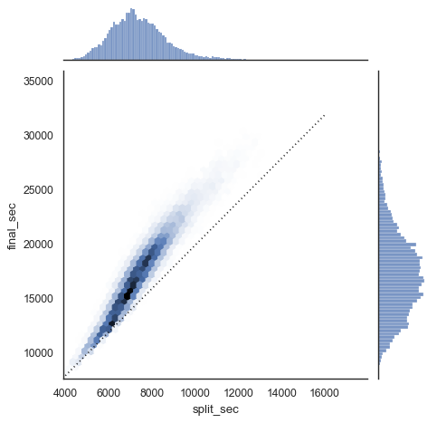
虚线表示这个人上半程时间和下半程时间一样。 但是显然，后半程更加耗时，越跑越慢。
现在衡量后半程加速的程度，小于0表示时后半程加速选手
data['split_frac'] = 1 - 2 * data['split_sec'] / data['final_sec']
data.head()
| age | gender | split | final | split_sec | final_sec | split_frac | |
|---|---|---|---|---|---|---|---|
| 0 | 33 | M | 0 days 01:05:38 | 0 days 02:08:51 | 3938.0 | 7731.0 | -0.018756 |
| 1 | 32 | M | 0 days 01:06:26 | 0 days 02:09:28 | 3986.0 | 7768.0 | -0.026262 |
| 2 | 31 | M | 0 days 01:06:49 | 0 days 02:10:42 | 4009.0 | 7842.0 | -0.022443 |
| 3 | 38 | M | 0 days 01:06:16 | 0 days 02:13:45 | 3976.0 | 8025.0 | 0.009097 |
| 4 | 31 | M | 0 days 01:06:32 | 0 days 02:13:59 | 3992.0 | 8039.0 | 0.006842 |
sns.displot(data['split_frac'], kde=False);
plt.axvline(0, color="k", linestyle="--");
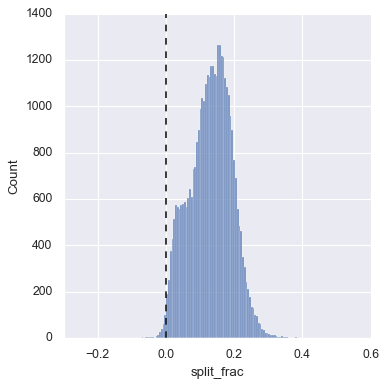
sum(data.split_frac < 0)
251
可以看到，4万名仅仅有250名时后半程加速选手。
那探究这与其他变量是否有相关性
g = sns.PairGrid(data, vars=['age', 'split_sec', 'final_sec', 'split_frac'],
hue='gender', palette='RdBu_r') # pairplot自由版
g.map(plt.scatter, alpha=0.8)
g.add_legend();
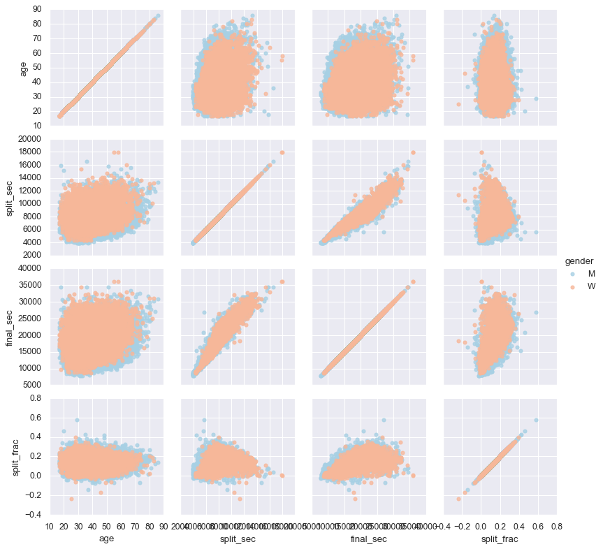
没看出什么相关性
对比男女选手差异：
sns.kdeplot(data.split_frac[data.gender=='M'], label='men', fill=True)
sns.kdeplot(data.split_frac[data.gender=='W'], label='women', fill=True)
plt.legend()
<matplotlib.legend.Legend at 0x2bd627f9f10>
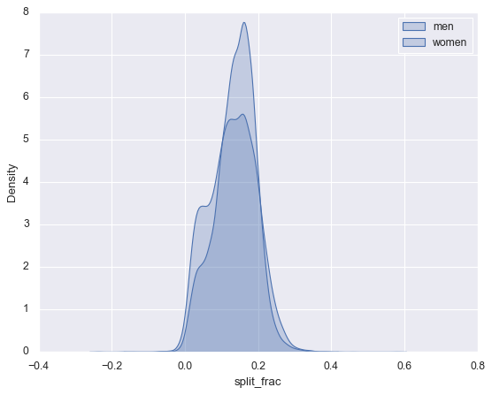
男女的后半程加速系数 几乎都是双峰分布
分开来看
sns.violinplot(x="gender", y="split_frac", hue="gender", data=data,
palette=["lightblue", "lightpink"], legend=False)
<Axes: xlabel='gender', ylabel='split_frac'>
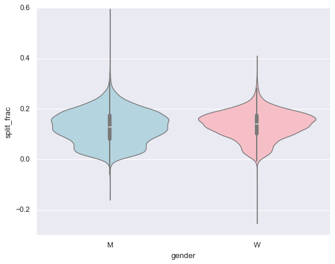
通过年龄段再看看
data['age_dec'] = data.age.map(lambda age: 10 * (age // 10))
data.head()
| age | gender | split | final | split_sec | final_sec | split_frac | age_dec | |
|---|---|---|---|---|---|---|---|---|
| 0 | 33 | M | 0 days 01:05:38 | 0 days 02:08:51 | 3938.0 | 7731.0 | -0.018756 | 30 |
| 1 | 32 | M | 0 days 01:06:26 | 0 days 02:09:28 | 3986.0 | 7768.0 | -0.026262 | 30 |
| 2 | 31 | M | 0 days 01:06:49 | 0 days 02:10:42 | 4009.0 | 7842.0 | -0.022443 | 30 |
| 3 | 38 | M | 0 days 01:06:16 | 0 days 02:13:45 | 3976.0 | 8025.0 | 0.009097 | 30 |
| 4 | 31 | M | 0 days 01:06:32 | 0 days 02:13:59 | 3992.0 | 8039.0 | 0.006842 | 30 |
men = (data.gender == 'M')
women = (data.gender == 'W')
with sns.axes_style(style=None):
sns.violinplot(x="age_dec", y="split_frac", hue="gender", data=data, split=True, inner="quartile",
palette=["lightblue", "lightpink"], legend=True)
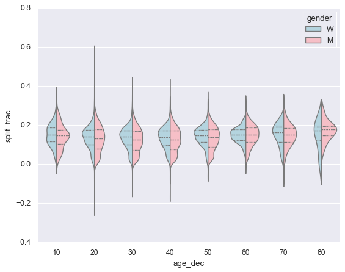
可以看到 20-50岁，男性选手 后半程加速系数的分布 更加松散。 80以上的女选手发挥比80以上男选手发挥好得多
(data.age > 80).sum()
np.int64(7)
这是因为80以上样本太少了
观察是哪些选手的 后半程加速系数 小于0
# Lmplot绘制散点图，并拟合直线。 col表示根据gender划分两个子图，
g = sns.lmplot(x='final_sec',y= 'split_frac', col='gender', data=data,
markers=".", scatter_kws=dict(color='c'))
g.map(plt.axhline, y=0.1, color="k", ls=":");
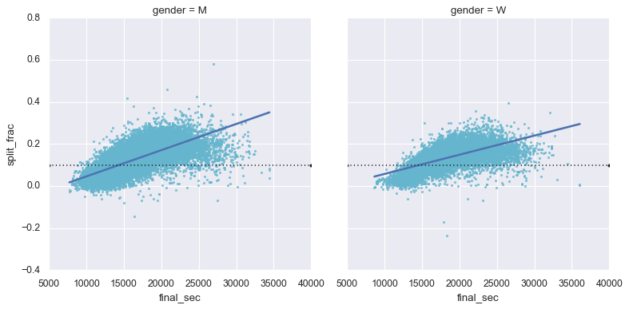
发现后半程加速选手的成绩都在15000秒内。
https://seaborn.pydata.org/generated/seaborn.heatmap.html